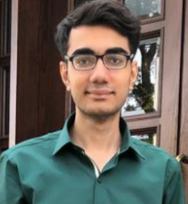

Muhammad Furrukh
Summary
I am a dedicated Electrical Engineering student whose current
interests lie in Robotics and Computer Architecture. I am also interested
in learning about web development, IoT and AI.
Education
Work Experience
Part time research intern @Maktab-e-Digital System
June 2024 - Present
- Intern under training
- Will be working on an Industry level project related to Digital System Design
Technical Skills
- Python and C Programming Languages ⭐⭐⭐⭐
- System Verilog ⭐⭐⭐⭐
- PCB Design using Altium ⭐⭐⭐
- Wordpress Web Development ⭐⭐⭐⭐
Awards and Certifications
- Worked as Co-lead for Technical Team. Developed our societies website on WordPress
- Rnner up in Logic Rumble coding Competition, conducted by IEEE UET, Lahore
- Worked as Co-Chair Robotics and Automation, for IEEE UET, Lahore
- Top in Punjab A level Further Mathematics